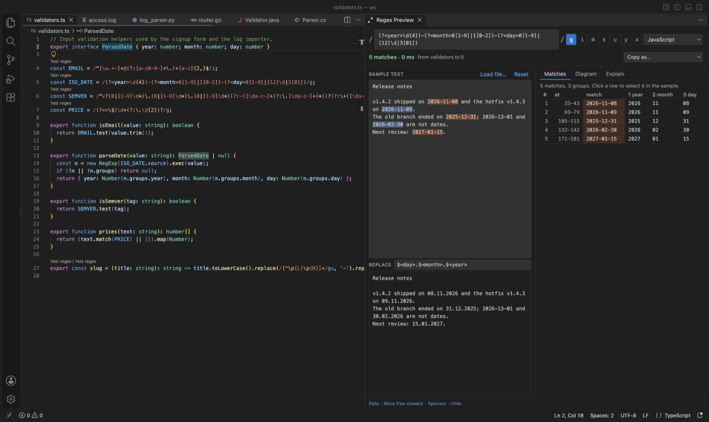

Open files in VS Code and Cursor / Code and APIs
Check a regex in another language before you port it
Most regex syntax is shared, but not all of it. Named groups, lookbehind and Unicode classes differ, and Go has no lookbehind at all. Regex Preview & Regex Tester lets you switch the flavor of a pattern to Python, Java, .NET, Go/Rust or PCRE, lists each part that works differently there, and copies the pattern as code for that language. Testing is free, and Zovo Pro (USD 19 once) extracts every match of the pattern in a file or folder to CSV, with 3 free tries.
Free, MIT license. Extension ID zovo.zovo-regex-preview, version 0.2.1. Needs VS Code 1.90.0 or newer.

Steps in VS Code
- Install Regex Preview from the Marketplace, or press Ctrl+P (Cmd+P on macOS) and run
ext install zovo.zovo-regex-preview. - Click Test regex above the pattern in your code. The panel opens with the pattern, its flags and the flavor of the file's language.
- Paste a few real lines in Sample text and note the matches and the group columns.
- Pick the target language in the flavor list, such as Python (re), Java, .NET (C#), Go / Rust (RE2) or PCRE (PHP, Ruby). The list under the pattern names each part that works differently there.
- Change the pattern until the list is empty and the matches are the same. The replace preview uses the flavor's syntax, such as
\1and\g<name>for Python. - Open Copy as and pick the language, such as Python
re.compile(r""). It handles the quoting, and for Python it turns the flags intore.IGNORECASEand the like.
Where Zovo Pro saves time
Testing on your own text, the group table, the replace preview, the flavor warnings, the railroad diagram, the Explain tab and Copy as code are free, with no sign-in. Nothing is sent anywhere.
A few sample lines are not proof. Extract Matches to CSV runs the pattern in the panel over a whole log or data file, or every text file in a folder, and writes one row per match with file, line, column, the match and one column per group. Python, Java, .NET and PCRE patterns are translated the same way as in the panel, so you can compare the rows with what the ported code finds. It writes up to 1,000,000 rows. The other Pro tool is Check Regexes for Catastrophic Backtracking.
With Extract Matches to CSV (Zovo Pro)
- With the pattern in the panel, click Extract Matches to CSV in the panel's title bar, or right-click a file or folder in the Explorer and pick "Zovo Pro: Extract Matches to CSV".
- Pick the file or folder if it asks, then where to save the CSV.
- A try counts only when the CSV is saved.
Extract Matches to CSV works 3 times on your computer before it asks for a license, and a try counts only when you get a result. Opening a file shows no popup and no countdown.
Zovo Pro costs USD 19 once. It is not a subscription, and it turns on the Pro tools in every Zovo extension, not only Regex Preview. After a card payment (Stripe) your license key shows on the next page. In VS Code, run "Zovo Pro: Enter Zovo Pro license key" from the Command Palette and paste it. The key is checked on your computer, with no network call. With GitHub Sponsors, pick the "$19 one time" tier, then run "Zovo Pro: I already paid: unlock with GitHub Sponsors" and sign in with the same GitHub account. With PayPal, send USD 19 with "Zovo Pro" in the note and the key comes by email within a day.
A team of 5: USD 59 once, by card or by PayPal. Every rule and every Pro tool is on the Zovo Pro page.
Steps in Cursor, Windsurf or VSCodium
- Open the Extensions view with Ctrl+Shift+X (Cmd+Shift+X on macOS).
- Search for
zovo.zovo-regex-previewand click Install. Cursor, Windsurf and VSCodium install from Open VSX, where it is published aszovo/zovo-regex-preview. - If your editor has no gallery, download the .vsix from the Open VSX page and run "Extensions: Install from VSIX...".
- Then use it the same way as in VS Code.
What Regex Preview handles
- Python warnings such as
(?P<name>...)for named groups, fixed-width lookbehind and no\p{...}in the re module. - Go and Rust warnings for lookahead, lookbehind and backreferences, which RE2 does not have.
- Java and .NET warnings for Python-style named groups and backreferences, and warnings for possessive quantifiers, which need Python 3.11 and do not exist in Go or .NET.
- Copy as JavaScript, Python, Java, Go, C#, PHP or Rust code.
What it does not do
- Patterns run in the JavaScript engine of VS Code. For other flavors the panel rewrites what it can and warns about the rest.
- Copy as handles quoting and, for Python, PHP and JavaScript, the flags. It does not rewrite the syntax, so fix what the warnings name first.
- In Python,
\d,\wand\salso match non-ASCII characters. The panel matches ASCII and says so. - Possessive quantifiers and atomic groups are tested as plain greedy ones.
Other options
- regex101. A free website with PCRE, Python, JavaScript, Java, .NET, Go and Rust flavors and a code generator. You paste the pattern and the text into the browser.
- Python re documentation. The reference for the syntax Python accepts, with the differences from other engines.
Install counts and Open VSX status were checked on 13 November 2026. Descriptions in quotes are the extensions' own.
Questions
Why does my named group fail in Python?
Python's re module wants (?P
Does Copy as convert the syntax?
No. It writes the pattern with the right quoting for the language. Fix the parts the warnings name first.
Which flavors can I check?
JavaScript, Python, Java, .NET, Go and Rust (RE2), and PCRE for PHP and Ruby.
Does it work in Cursor or Windsurf?
Yes. Cursor, Windsurf and VSCodium install extensions from Open VSX. Search for the extension in their Extensions view and install it there.
More about Regex Preview
Read the Regex Preview page for every feature and setting, or the source code on GitHub.
Related guides
- Test a regex in VS Code
- Find out what a regex in your code does
- Open a SARIF file in VS Code
- Preview a Swagger or OpenAPI file in VS Code
Support this work
If this extension saves you time, you can support the work on GitHub Sponsors. Monthly tiers start at $5, and one-time tiers start at $15. Sponsorship is optional, and the tool works the same without it.
Need your format supported?
Open a format request with a sample file, and I reply there whether it can be done. For USD 299 once, through this GitHub Sponsors tier, I add your file format or a missing feature to this extension, with tests, within 7 days.